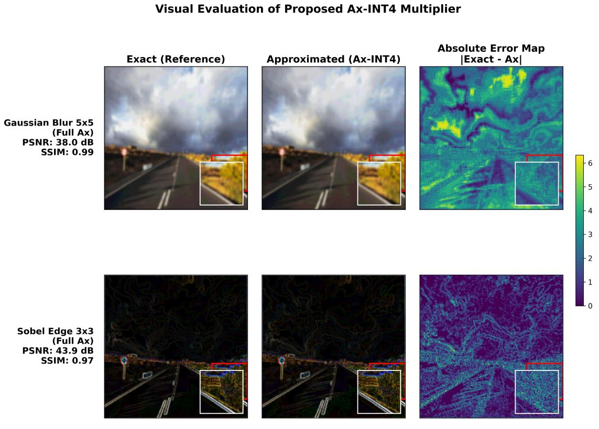
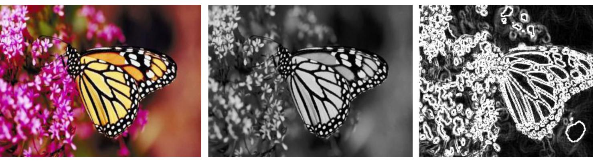

Evidencia
Figuras



0,036 mm²área en Sky130 · 2.183 celdas · 2 tiles
2,91 mWpotencia total medida a 1,8 V
SSIM 0,983fidelidad de la conversión a grises aproximada
100 % / 42 %coincidencia en grises / discrepancia en Sobel
Conclusiones
Lo que aprendimos
Capacidad instalada
Entorno de RL propio en GPU, flujo RTL-a-GDSII sobre Sky130 y banco de pruebas post-silicio en la UNAL.
El silicio corrige al modelo
La etapa Sobel de brUNo presentó 42,01 % de discrepancia que la verificación RTL no detectó.
Potencia medida, no estimada
El reloj representa cerca del 27,8 % de la potencia dinámica, y la fuga medida supera la estimada por OpenLane.